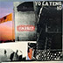
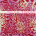
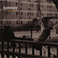
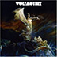

Quicky Update
October 5, 2006
so here is the deal, Drew Brockington hooked me up with The Eraser and it turns out that
it is totally awesome. who knew. I was not really prepared to like it so much actually. wow.
That's all for now,
K
De Temps En Temps
September 22, 2006
I watched shopgirl again recently, and it put me onto a Sun Kil Moon kick again. Mark Kozelek plays
the lead singer from “Hot Tears” in the movie, but they really are playing the songs
from Ghosts from the Great Highway. I love Mark Kozelek, and seeing him in a movie, hearing the songs, it got me
back on those albums. I believe that he is on a little tour starting soon, and you should get out and see
him if you can. I have heard that he does not like to ride in cars, and so does not go on tour very
often for that reason. Thus you cannot miss the chance to get out and see him. Cannot!


This is an album that I cannot believe is over a decade old already. Amazing. It still sounds current, still sounds
exciting, still sounds like it has urgency and meaning, still sounds just plain good. This album has been showing
up quite often in my itunes shuffle rotation. It is something that I never could quite place just hearing
it in the background. However, once it finally came to me that all these songs I was hearing were on one
album, and that it was a yo la tengo album, i got a little hooked. Starting with Decora (which Spoon covers
on a compilation album by the Believer Magazine of favorite indie covers by other indies) you know you are
off to a good start. The album as a whole has a nice combination of noise and melody and excitement and energy
and just the perfect hint of quiteness to bring it down a notch in just the right places.
“Tom Courtenay,” track 4, is one of my favorite songs on the album. The opening has the correct amount of
memorable melody and memorable lyrics - “Hilary Christie, the rumors are true...” great opening lines.
The songs placement in the order makes the Tom Coutenay suddenly rock pretty hard.
As a whole there is a nice flow from song to song, a general cohesive feel to all the songs
without them all simply sounding the same. I love that in an album. There are some sonic refernces to the Velvet
Underground in the types and durations of distorted song endings, particularly the song “Attack on Love,” a sort
of sonic battle which sounds as though it could have come of of the Velvet underground and Nico.
Yo La Tengo has just released a new record called “I am not afraid of you and i will beat your ass,” wow!
The new album shows remarkable growth over the last decade. Now there are several albums in between,
but just listening to the two in a row shows that it is still the same band, but that they have a new
matured sound that has lost the angst but gained a wry wit that shows in smart piano parts and milder
distorted guitars, flutterly falseto vocal lines and lovely, snappy drum parts.
 Camera Obscura are fans of Mo-Town music. This may not be a for sure fact, but it is what i take away from
listening to their music. Particularly on “Let's Get Out of This Country,” they sound as if they
have channeled Phil Spector and his vintage reverb into their recording. The drum beats are there too, the few
standard mo-town beats fill a songs like “Lloyd, I’m ready to be Heartbroken,” “Come
Back Margaret,” and “Let’s get out of this Country.” They have the feel of a more nostalgic
to Belle and Sebastian, nicely orchestrated with female vocals that sit firmly on top of the music. They fall into
the sonic realm that i really enjoy to just listen to over and over again. At first the music is enjoyable enough
on its own to read or eat or cook or design websites too, but as you continue to listen you start to hear the
nuances in the lyrics, and pick up on the extra sounds and harmonies floating amongst the rest of the mix. Another
album that might not blow you away like Funeral or Oh! inverted World, but that will be enjoyable for many
listens to come
Camera Obscura are fans of Mo-Town music. This may not be a for sure fact, but it is what i take away from
listening to their music. Particularly on “Let's Get Out of This Country,” they sound as if they
have channeled Phil Spector and his vintage reverb into their recording. The drum beats are there too, the few
standard mo-town beats fill a songs like “Lloyd, I’m ready to be Heartbroken,” “Come
Back Margaret,” and “Let’s get out of this Country.” They have the feel of a more nostalgic
to Belle and Sebastian, nicely orchestrated with female vocals that sit firmly on top of the music. They fall into
the sonic realm that i really enjoy to just listen to over and over again. At first the music is enjoyable enough
on its own to read or eat or cook or design websites too, but as you continue to listen you start to hear the
nuances in the lyrics, and pick up on the extra sounds and harmonies floating amongst the rest of the mix. Another
album that might not blow you away like Funeral or Oh! inverted World, but that will be enjoyable for many
listens to come

I have had the pleasure to know this band for some time now. While at my lowly 2024 records intern position these
guys were signed to the label. I have probably seen them play live about fifty times now, and each time they are just
as grateful that everyone has come out to see them. I do not think the realization that the twin cities really
enjoys them has sunk in yet. This is their first proper full-length as a band. The original album that got them all
their hype and shows was simply an EP that band leader Andy Flynn recorded with T.W.Walsh (of Pedro the lion
album production fame). It was simple and slow and beautiful. The full band effort reinvisions some of the EP's songs
with the “full band feel.” The guitar parts lazily mingle with one another, the drums
trudge evenly along, and the vocals float beautifully above it all. There is no rushed feeling to any of the numbers,
they all keep an even pace, moving from one song to the next, marching steadily from beginning to end.
My favorite duplomacy song is still Coppertone, which has been given new life
since the EP. I just love the lyric “Maybe we should call it off, leave what's bad enough alone /
such a sunny attitude, without a drop of coppertone.” The other aspect of Dupe's songs that always catches
me is the transitions. There is a big build up in some of the songs that takes you by surprise. Suddenly a wall of
distortion blows into the mix, or the tempo suddenly changes, or perhaps the song takes a complete twist. That is
the beauty of the album, the song structures may be simple, but Duplomacy is not afraid to change it up unexpectedly
to give you something new and original from some well-trodden territory.

Do you like Black Sabbath or Led Zepplin or maybe AC/DC if so than go and buy this right now. i mean it, right now.
There is absolutely nothing original about this album, nothing, all of their chops and tricks have been directly
taken from the hard rock pantheon of great bands. The only thing is that they haven't been done in a while, and
maybe what everyone needs right now is this decades Masters of Reality. The fact remains that while this album
may not be original it is fun to listen to at least. And for all you kids out there who's parents did not own
any Sabbath or Zepplin perhaps this will do for you, and maybe even sound engagingly fresh. The song “Woman”
is the stand out track for me on this record, it is plain and simple and rocks. And that is what this album is all
about, 3 kids from australia playing hard rock simply and plainly. Fun but nothing fancy, brainless enjoyment
for the masses who missed out on early ozzy. Oh, the album artwork is totally awesome however. Cliche in the same
way as the music, but awesome none the less.
If you are wondering about the lack of new music, and lack of stuff heard it is becuase I
have been listening to a lot of NPR lately - and trying to learn - or at least have been trying
to learn how to be pretentious...
It is interesting to me that the feeling I get from knowing the most current world affairs is not
one of elation or happiness, or even wisdom but more likely takes the form of despair and frustration.
Actually listening to an entire Bush press conference is much
more maddening than just hearing the dumbest four soundbites on local news. And hearing correspondants from
foreign lands that actually know what they are talking about, and do not just tell us what the bushites want
us all to hear about how afghanistan or iraq or lebanon or djibuti are going. crazy. i am getting a little flustered
even typing this. man.
back to music.
Has anyone listened the new Thom Yorke album? how about the Heartless Bastards? anyone tired of music?
anyone have their own top ten list? Get in touch
if any of these are so.
Peace in the middle east
Kristian
p.s. before i posted all of this nonsense, i made a stop at Best Buy to check out receivers... I am putting
together a new stereo, and before i ordered online i just wanted to make sure in person that the sony i was looking at
had everything i wanted. Well i checked out the stereo, and then before i knew it i had bought five new albums and
season four of seinfeld... so there are some additions to albums acquired, though they weren't meaningfully listened
to yet. Oh and it you have not seen it already, you really need to go online and check out the treadmill video by
OK GO (it will either be undera google search for 'treadmill video' or 'here it goes again video') it is amazing, that is all i
have to say on the matter - oh and they filmed it themselves... Sadly, as i went to put away the new
ben kweller disc, i was not able to locate his earlier album that i had imagined owning - sha sha - it
is a darn shame, just disappeared.